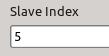
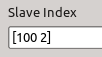

Common EtherCAT slave options
Many slave options are common for all slaves. In this section the
following options are discussed:
Master
A numeric scalar representing the master that the slave is
connected to.
Slave Index
A slave can be identified by its absolute position in the EtherCAT
bus or by its position relative to another slave.
The absolute position counter is incremented with every slave
starting from zero with the first slave. If the bus topology changes,
a slave's absolute position will be affected if the change was closer
to the master.
Slaves can also be addressed relative to each other. For this
purpose, a slave's alias is used. This alias is a number that is
permanently stored in a slave's non-volatile memory (see the
ethercat alias command). Thus it is possible to identify a
slave even after a power reset.
Every time a slave with an alias is encountered during bus
scanning, the alias counter is reset. Subsequent slaves can be
addressed relative to this one.
To enter an absolute address, simply enter the slave position as a
numeric scalar. A relative address is entered as a vector
[alias position].
Example:
The ethercat slaves command can be used to show all
slaves attached to a master device:
user@host:~$ ethercat slaves
0 0:0 OP + EK1101 ...
1 0:1 OP + EL4004 ...
2 0:2 OP + EL2624 ...
3 100:0 OP + EL4004 ...
4 100:1 OP + EL2624 ...
5 100:2 OP + EL1144 ...
6 100:3 OP + EL2624 ...
In column 1 the slave's absolute position is shown. Column 2 shows a
slave's relative addressing using the alias. Slave 3 has an alias of
100 set.
The slave at absolute position 5 (EL1144) can also be addressed
relative to slave 3 that has an alias set. In this case, its address
is [100 2]. This relative address will not change if slave
at position 2 (EL2624) is removed, for example. It will obviously
change if slave 4 is removed.
Examples of addressing slave 5 in the block's mask:
| Absolute Addressing: |
 |
| Relative Addressing: |
 |
Device Model
Select a device from the drop down list.
Vector Inputs/Outputs
Checking this option groups the block's inputs and/or outputs to fewer
ports.
Input Scale
This value will prescale the input before it is written to the PDO.
The effect of setting this is:
- Empty vector (e.g. []): Raw input. Data type
can be either Real32, Real64 or the PDO's data type
- Scalar (e.g. 0.1): The input port data type is
forced to double. All inputs are premultiplied by the scalar
value, where the result should be in the range [0,1) or [-1,1).
This result is mapped to the PDO's domain [IntMin,IntMax]. The
scaling value is available as a run-time parameter.
- Vector (e.g. [0.1 0.5]): The input port data type is
forced to double. The inputs are vector multiplied with the value,
where the result should be in the range [0,1) or [-1,1). The
scaling value is available as a run-time parameter.
Note: When the input is of type double, the PDO
value is limited between its maximum and minimum values. There is thus
no need to worry about the value wrapping.
Output Scale/Offset/Filter
This setting is similar to Input Scale
Setting any one of these values will cause the output to be of type
double. The PDO value is then scaled to a value in the range
[0,1) or [-1,1) for unipolar or bipolar outputs respectively,
multiplied by the scalar value and adding the offset.
LPF time constant of a low pass filter applied after scaling. The
unit is [s]. (See deprecated use of frequency
below).
All these parameter values are available as run-time parameters.
If any one of these parameters are empty ([]), the
specific operation is ignored. The corresponding run-time parameter is
also not generated.
Deprecated LPF frequency (rad/s)
The use of LPF frequency is deprecated because the
implementation was misleading, changed when block sample time changed
and inconsistent between continuous and discrete block sample time.
Replace the block with a new one from the library and use LPF time
constant instead.
Continuous blocks (Sample Time = 0) just insert the inverse, i.e.
TimeConstant = 1 / LPF_Frequency.
Discrete blocks use
TimeConstant = BlockSampleTime / LPF_Frequency
Distributed Clocks
Select the correct Distributed Clocks mode from the selection list.
The last item DC Customized allows custom control of DC by
being able to set values for:
| AssignActivate |
| CycleTimeSync0 | CycleTimeSync0Factor |
| ShiftTimeSync0 | ShiftTimeSync0Factor |
| ShiftTimeSync0Input |
| CycleTimeSync1 | CycleTimeSync1Factor |
| ShiftTimeSync1 | ShiftTimeSync1Factor |
The values of CycleTimeSyncX and ShiftTimeSyncX are in nanoseconds.
These vector specifies the values for CycleTime0 (ESC 0x9A0),
CycleTime1 (ESC 0x9A4) and StartTime (ESC 0x990) for
the slave in nanoseconds and AssignActivate (ESC 0x980).
The value for CycleTime0 is calculated as:
if CycleTimeSync0 ~= 0
CycleTime0 = CycleTimeSync0
else if CycleTimeSync0Factor > 0
CycleTime0 = BlockSampleTime * 1e9 * CycleTimeSync0Factor
else if CycleTimeSync0Factor < 0
CycleTime0 = BlockSampleTime * 1e9 / -CycleTimeSync0Factor
else
CycleTime0 = 0
endif
The value for CycleTime1 is calculated as:
if CycleTimeSync1 ~= 0
T1 = CycleTimeSync1
else if CycleTimeSync1Factor > 0
T1 = CycleTime0 * CycleTimeSync1Factor
else if CycleTimeSync1Factor < 0
T1 = BlockSampleTime * 1e9 * -CycleTimeSync1Factor
else
T1 = 0
endif
CycleTime1 = T1 - CycleTime0 + ShiftTimeSync1
The value for ShiftTime is calculated as:
if ShiftTimeSync0Factor > 0
ShiftTime = ShiftTimeSync0 + CycleTime0 * ShiftTimeSync0Factor
else if ShiftTimeSync0Factor < 0
ShiftTime = ShiftTimeSync0 + CycleTime0 / -ShiftTimeSync0Factor
else
ShiftTime = ShiftTimeSync0
endif
The value of ShiftTime is used to calculate the start time of
the internal clocks.
Take particular note how the sign of factor chooses
BlockSampleTime or CycleTime0!
Usually it is a bad idea to use fixed times for cycle times
(CycleTimeSyncX). Using factors
(CycleTimeSyncXFactor) increases flexibility because it
relates to the model's sample time.
The values of ShiftTimeSync0Input and
ShiftTimeSync1Factor are ignored and reserved for future use.
Consult the EtherCAT documentation for further references
regarding the meaning of these values.
Sample Time
The Sample Time is either a scalar or a vector with two
elements.
The first value of a vector or the scalar value sets the block's
sample time as follows:
| -1 | Inherited sample rate |
| 0 | Continuous/fastest sample rate |
| T | Discrete sample rate with period T |
Data exchanged with slaves is organized in groups called domains.
Every sample time in a Simulink diagram has at least one domain,
domain< >0.
The second element of a vector in this field specifies the domain
identifier where a slave's data is grouped into. The domain
identifier is any positive number. The domain is 0 if a scalar is
entered for Sample Time. The number of domains are
practically unlimited. However, a small overhead is caused by every
domain.
All slaves having the same key [SampleTime Domain] reside
in the same domain.
Domains can be used to manage slaves. The Domain State
block in etherlab_lib/EtherCAT can be used to monitor if all
slaves in a domain are present or not.
Very rarely, some very simple unintelligent EtherCAT slaves cannot
handle domains having both input and output PDOs (from other slaves of
coarse). If the domain identifier is chosen carefully, a domain will
only consist of the one or other PDO direction, enabling these slaves
to be used.